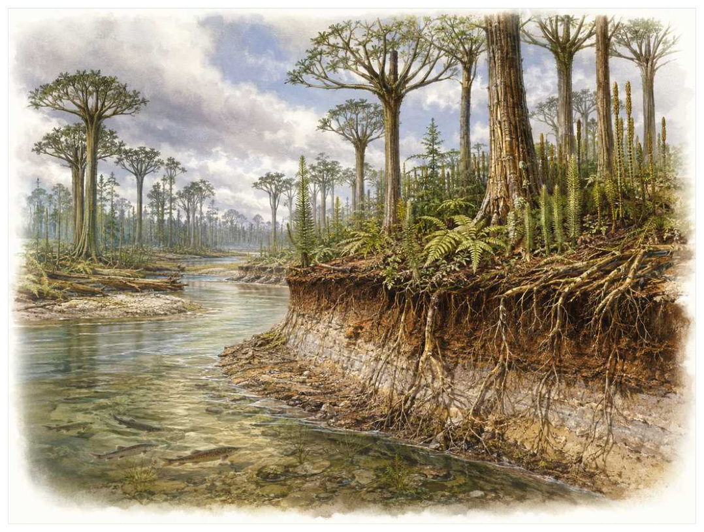
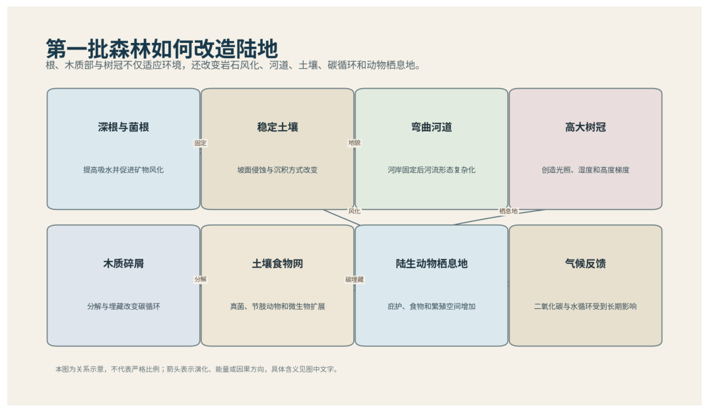

第07篇 · 泥盆纪：鱼类时代与四足动物起源 · 第 23 章
第一批森林：植物怎样重写河流、土壤与气候
本篇主题:泥盆纪：鱼类时代与四足动物起源
颌、鳍、森林和浅水环境共同推动脊椎动物的新实验。

本章科学复原配图 （用于呈现结构与生态关系, 不替代化石照片、测量数据与系统发育证据。）
如果把演化树看作不断生长又不断被修剪的枝丛，中泥盆世至晚泥盆世，约3.93亿至3.59亿年前是其中关系重新布置的一段。植物登陆不是给动物搭建一块绿色背景，而是一次行星尺度工程。根系深入基岩，增强化学风化并固定沉积物；木质素和维管组织让植株向上生长，形成阴影、枯落物和立体栖息地；深根改变河岸稳定性与河道形态，森林又把大量碳暂时锁入木材和土壤。泥盆纪的大陆第一次出现真正树冠，陆地碳循环和水循环随之改变。
进入这个时代
若真正置身其中，首先感受到的是介质本身：水是否含氧、地面是否稳定、空气是否干燥、植被是否遮挡视线。身体结构只有放在这些条件中才有意义。阿尔卡山森林里没有草，也没有开花植物。树状枝蕨类展开密集叶状枝，始祖木一类植物用木质主干支撑高大树冠，地面被根系和腐殖质切成复杂微环境。河流不再只在裸露砾石间摆动，而被植被抓住岸线，形成更稳定曲流和泛滥平原。
在“第一批森林：植物怎样重写河流、土壤与气候”所覆盖的时间里，不能把地理与气候当作固定背景。海陆位置、海平面、河流或植被结构会改变资源可达性，同一性状在不同地区可能得到完全相反的选择结果。
以第一批森林：植物怎样重写河流、土壤与气候为例，化石记录偏爱硬组织、快速埋藏和容易出露的岩层。一次“首次出现”通常只是目前所知的最早记录，一次“突然消失”也需要排除保存窗口关闭。年代、形态和环境证据必须一起解释。 在本章中，这一约束具体落在“深根把营养从岩石带入表层并增加黏土形成”这条关系上。
再从中泥盆世至晚泥盆世，约3.93亿至3.59亿年前的时间尺度看，物种数量并不等于生态功能。一个群落即使仍有许多物种，只要初级生产、授粉、礁体建造或大型植食等关键功能消失，食物网也会表现为深度崩溃。反过来，少数机会型物种高丰度并不代表系统已经恢复。 它与“维管运输与木质化”共同决定了后续变化可以沿哪些路径发生。

图 23-1 根、木材和树冠使植物成为地球表面工程师。
生态系统如何运转
在中泥盆世至晚泥盆世，约3.93亿至3.59亿年前，“深根把营养从岩石带入表层并增加黏土形成”把环境条件转化为生物之间的差异。相同气候并不会平均影响所有支系，因为它们利用的食物、水层、底质和繁殖地点并不相同。
围绕“深根把营养从岩石带入表层并增加黏土形成”，还要考虑空间异质性。一项在浅海、河谷或林冠有效的策略，移到深水、干旱内陆或开阔地便可能失去优势。因此同一支系常出现区域性扩张，而不是全球同步取代。 对第一批森林：植物怎样重写河流、土壤与气候而言，这一后果还会与“树冠制造高度分层，为节肢动物和真菌提供新生态位”相互放大或抵消。
本章的一条关键关系是“树冠制造高度分层，为节肢动物和真菌提供新生态位”。它首先改变资源在个体之间的分配：能更早发现、处理或占据资源的种群获得收益，而另一方会承受新的选择压力。
围绕“树冠制造高度分层，为节肢动物和真菌提供新生态位”，这一机制也会留下间接证据：咬痕、修复伤、足迹密度、粪化石、牙齿磨损和群落年龄结构分别记录不同环节。只有多种证据方向一致，行为解释才应上调可信度。 对第一批森林：植物怎样重写河流、土壤与气候而言，这一后果还会与“木材难分解导致碳埋藏，并可能影响大气二氧化碳与气候”相互放大或抵消。
“木材难分解导致碳埋藏，并可能影响大气二氧化碳与气候”体现了生态系统的反馈性。一方结构或行为稍有改变，另一方的防御、逃避、繁殖和空间选择就会重新排列，长期累积后才形成宏观演化差异。
围绕“木材难分解导致碳埋藏，并可能影响大气二氧化碳与气候”，从演化树看，相似关系可能在远亲中反复出现。功能相近不必意味着近缘，而同一祖先结构也可能被后代改作完全不同的用途；生态解释必须与系统发育互相校验。 对第一批森林：植物怎样重写河流、土壤与气候而言，这一后果还会与“深根把营养从岩石带入表层并增加黏土形成”相互放大或抵消。
关键演化创新
在“第一批森林：植物怎样重写河流、土壤与气候”中，围绕“维管运输与木质化”，从共同选择角度看，“维管运输与木质化”可能先服务旧功能，后来才参与今天最熟悉的用途。把最终功能倒推成起源原因，会把演化误写成有目的的工程。 它首先需要在中泥盆世至晚泥盆世，约3.93亿至3.59亿年前的生态条件下产生可测量收益。
就“维管运输与木质化”而言，研究者通过近缘支系比较、发育同源、关节活动、微观组织和出现顺序重建这条路径。真正有价值的过渡化石不是“半成品”，而是证明中间组合可以独立生活。 本章把它与“真正根系和次生生长”并列，是为了显示复杂性状往往依赖多部分协同。
在“第一批森林：植物怎样重写河流、土壤与气候”中，围绕“真正根系和次生生长”，讨论“真正根系和次生生长”时，最重要的问题是它解除哪一道限制。只要原有身体在运动、摄食、呼吸或繁殖上受约束，能够稍微缓解约束的变异就可能积累，最终产生看似跃迁的结果。 它首先需要在中泥盆世至晚泥盆世，约3.93亿至3.59亿年前的生态条件下产生可测量收益。
就“真正根系和次生生长”而言，它的成功具有条件性。环境稳定时，专门化可提高效率；危机到来时，同一专门化可能限制食物和栖息地选择。演化创新因此既能开启辐射，也能制造新的脆弱性。 本章把它与“树冠、落叶层与森林土壤”并列，是为了显示复杂性状往往依赖多部分协同。
在“第一批森林：植物怎样重写河流、土壤与气候”中，围绕“树冠、落叶层与森林土壤”，从共同选择角度看，“树冠、落叶层与森林土壤”可能先服务旧功能，后来才参与今天最熟悉的用途。把最终功能倒推成起源原因，会把演化误写成有目的的工程。 它首先需要在中泥盆世至晚泥盆世，约3.93亿至3.59亿年前的生态条件下产生可测量收益。
就“树冠、落叶层与森林土壤”而言，这一变化还可能在多个支系中独立发生。若功能相似而解剖来源不同，就是趋同；若结构来自共同祖先但功能改变，则属于同源结构的分化。二者不能仅靠外观判断。 本章把它与“维管运输与木质化”并列，是为了显示复杂性状往往依赖多部分协同。
生命群像：把物种放回生态网络
始祖木（Archaeopteris）
在晚泥盆世，始祖木（Archaeopteris）以约可高达约20至30米的身体参与食物网。它不是孤立的“明星生物”，而是早期森林的高大树木样植物；木质主干、广阔根系和蕨状枝叶结合，繁殖仍依靠孢子决定它能利用哪些资源，也决定必须承担哪些成本。
对始祖木而言，同域物种的存在迫使它分割时间与空间。相似牙齿不一定吃完全相同的食物，相似四肢也可能适应不同底质；微磨损、同位素和伴生群落常能揭示这种细分。环境改变时，原本减少竞争的专门化又可能成为迁移和改食的障碍。 这使“木质主干、广阔根系和蕨状枝叶结合，繁殖仍依靠孢子”不能脱离其早期森林的高大树木样植物角色来理解。
证据核心是木材解剖、根系和全球分布化石显示其在晚泥盆世形成广阔森林。化石记录更擅长回答“结构是什么”，较难回答“每天怎样行动”。足迹、胃内容物、咬痕或胚胎若存在，会显著缩小推测范围；若只有零散骨骼，行为叙述就必须更克制。
由始祖木这个案例看，它所代表的身体方案后来可能消失，也可能被远亲以不同材料重新发明。生命史因此既有可重复的功能解，也有不可复制的谱系路径。两者结合，才解释现代生物为何既熟悉又偶然。 它在晚泥盆世留下的记录，因此同时是第23章所讨论的形态史和生态史的一部分。
瓦蒂萨树（Wattieza）
认识瓦蒂萨树（Wattieza）要先放弃静态骨架印象。它生活在中泥盆世，约约8米或更高，日常任务是作为早期树状枝蕨类维持能量与繁殖。空心或多束维管柱支撑顶部枝冠，与现代树木结构不同只是这一整套生活史中最容易化石化的部分。
对瓦蒂萨树而言，它的成功不需要在所有性能上压倒其他物种，只需在特定资源和风险组合中留下更多后代。速度、咬合、装甲、感官与繁殖之间存在预算，某项性能极端化往往意味着另一项被牺牲。所谓“霸主”只是复杂权衡后的区域性结果。这使“空心或多束维管柱支撑顶部枝冠，与现代树木结构不同”不能脱离其早期树状枝蕨类角色来理解。
判断它的生活方式时，研究者首先使用吉尔博亚直立树桩和关联树冠化石建立完整复原。随后会检验替代解释：同样的牙是否也能处理其他食物，同样的骨骼比例是否由年龄造成，同一骨层是否来自群体生活还是灾难性聚集。排除过程比贴标签更重要。
由瓦蒂萨树这个案例看，过去的复原常受完整现代动物模板影响，新材料则迫使研究者接受更陌生的身体比例或生活方式。最稳妥的表达是保留估计区间，并明确哪些软组织、颜色和社会行为仍属合理推测。 它在中泥盆世留下的记录，因此同时是第23章所讨论的形态史和生态史的一部分。
真蕨木（Eospermatopteris）
真蕨木（Eospermatopteris）生活在中泥盆世，已知体型约为数米高。它在群落中的角色可概括为湿地森林中的树状植物。最值得观察的结构是膨大基部和浅根适应软沉积物，顶部为反复分枝的无叶枝冠。这些结构不是为了后来时代而准备，而是在当时直接影响摄食、运动、防御或繁殖。
对真蕨木而言，从种群角度看，偶发捕猎和个体伤病远不如长期繁殖率重要。广泛分布的普通个体比一具异常巨大的标本更能代表支系，然而普通个体往往较少进入公众叙事。研究者必须防止把化石收藏偏好误当成古代丰度。 这使“膨大基部和浅根适应软沉积物，顶部为反复分枝的无叶枝冠”不能脱离其湿地森林中的树状植物角色来理解。
关于它的直接依据是：原位根座和树干群落显示早期森林并不都具有深根。研究者还必须确认骨骼是否属于同一个体、是否被水流搬运、压扁是否改变比例，以及不同大小是否只是成长阶段。只有解剖、地层和功能证据相互一致，复原才可上调为高可信。
由真蕨木这个案例看，它在生命史中的价值不在于离现代形态还有多远，而在于证明这一身体组合曾真实可行。即使没有直系后代，支系也可能在当时持续繁盛，并通过捕食、植食或栖息地工程改变其他生命的选择环境。它在中泥盆世留下的记录，因此同时是第23章所讨论的形态史和生态史的一部分。
石松类先驱（Drepanophycus）
在这一章的生命群像里，石松类先驱（Drepanophycus）不能只当作图鉴名称。它出现于早至中泥盆世，体型大约常不足一米，主要生活方式是河岸和湿地的低矮维管植物；小型叶与匍匐轴稳定早期土壤表面则说明身体怎样围绕这一生活方式进行组合。
对石松类先驱而言，把它放回群落后，结构的意义更清楚。食物并不会平均分布，水深、植被高度、底质和季节把资源切成小块；它的身体让其中一部分资源可被利用，也使它与近缘种错开生态位。种群命运还取决于幼体能否成长、繁殖地点是否稳定以及灾害后是否仍有避难所。 这使“小型叶与匍匐轴稳定早期土壤表面”不能脱离其河岸和湿地的低矮维管植物角色来理解。
现有认识建立在完整压印和根样结构支持其在高大森林前已建立连续植被之上。古生物学的可信度不是来自一件戏剧化标本，而是来自多件标本、多个地点和不同方法得到相容结果。新发现若改变比例或分类，并非此前研究毫无价值，而是证据边界被重新画清。
由石松类先驱这个案例看，从生态尺度看，它与本章其他成员共同维持一张网络。任何“最强”排名都会遗漏资源供应、幼体死亡、疾病和气候脉冲；真正决定长期成功的是种群能否在波动中不断完成繁殖。 它在早至中泥盆世留下的记录，因此同时是第23章所讨论的形态史和生态史的一部分。
原始种子植物（Elkinsia polymorpha）
从外形看，原始种子植物（Elkinsia polymorpha）最容易被记住的是胚珠被叶状结构包围，代表繁殖从自由孢子向种子保护过渡。它生活在晚泥盆世，大小约藤本或灌木级，承担森林边缘的早期种子植物这一生态功能。把年代、体型和功能放在一起，才能避免把奇特形态当成无意义装饰。
对原始种子植物而言，同域物种的存在迫使它分割时间与空间。相似牙齿不一定吃完全相同的食物，相似四肢也可能适应不同底质；微磨损、同位素和伴生群落常能揭示这种细分。环境改变时，原本减少竞争的专门化又可能成为迁移和改食的障碍。 这使“胚珠被叶状结构包围，代表繁殖从自由孢子向种子保护过渡”不能脱离其森林边缘的早期种子植物角色来理解。
支持该解释的材料包括保存的生殖器官揭示种子特征，但整株形态仍不完整。若不同证据出现冲突，应优先报告范围而不是强行给出单值。例如体长会随参照类群变化，运动能力会随软组织假设变化，系统位置也会随新增性状重新计算。
由原始种子植物这个案例看，它也展示专门化的双面性：结构在稳定环境中提高效率，却可能在气候、食物或竞争格局突变时限制转向。灭绝不是对设计的道德评分，而是性状、地理范围和偶然事件相遇后的历史结果。 它在晚泥盆世留下的记录，因此同时是第23章所讨论的形态史和生态史的一部分。
因果链：环境、生态与性状
“深根把营养从岩石带入表层并增加黏土形成”与“木材难分解导致碳埋藏，并可能影响大气二氧化碳与气候”之间常存在反馈。一个支系改变沉积、植被或猎物数量后，环境会对其自身和其他支系产生新的选择压力；短期收益可能导致长期资源下降，局部工程行为也可能创造此前不存在的栖息地。始祖木作为早期森林的高大树木样植物，真蕨木作为湿地森林中的树状植物，即使从不直接相遇，也可能经由这种环境改造联系起来。生态系统因此不是静态背景上的竞赛场，而是参与者不断修改规则的动态结构；这正是解释第一批森林：植物怎样重写河流、土壤与气候为何会留下长期后果的关键。
亲缘关系为功能解释设定边界。“树冠、落叶层与森林土壤”若在近缘支系中以不同程度出现，最简解释通常是祖先已具备部分结构，后代分别强化或丢失；若远亲在相似生态位中出现相近功能，则需要检查内部解剖是否来自不同材料。始祖木与真蕨木可用于演示这一区分：外形近似不自动证明近缘，外形差异也不否定深层同源。把系统发育树、年代和生态证据叠在一起，才能判断第一批森林：植物怎样重写河流、土壤与气候中的相似究竟来自共同继承、趋同还是保留的原始特征。
从资源入口看，“深根把营养从岩石带入表层并增加黏土形成”决定能量首先由谁获得，而“树冠制造高度分层，为节肢动物和真菌提供新生态位”决定能量随后怎样在群落中转移。只有当个体能够借助“维管运输与木质化”把资源转化为生长或后代时，形态优势才会成为种群优势。始祖木与瓦蒂萨树分别展示了这条链上的不同位置：前者的木质主干、广阔根系和蕨状枝叶结合，繁殖仍依靠孢子使其偏向早期森林的高大树木样植物，后者的空心或多束维管柱支撑顶部枝冠，与现代树木结构不同则服务于早期树状枝蕨类。这并不意味着二者必然直接竞争；更常见的情况是，它们通过共享资源、改变栖息地或影响共同捕食者而间接连接。把这种间接作用纳入，才看得见第一批森林：植物怎样重写河流、土壤与气候不是物种名单，而是一张持续重新分配能量的网络。
“木材难分解导致碳埋藏，并可能影响大气二氧化碳与气候”说明环境不是在所有个体身上平均施力。若一个种群分布广、世代较短或能使用多种资源，它可能把一次局部危机吸收到地理和生活史差异之中；若另一个种群依赖狭窄水深、单一植物或特定繁殖场，平时高效的专门化就可能在变化中放大风险。瓦蒂萨树和真蕨木的差异可以用来提出这种比较，但不能仅凭外形宣布谁更适应。真正需要的是地层连续性、地区分布、年龄结构和伴生群落共同告诉我们，哪些性状在第一批森林：植物怎样重写河流、土壤与气候的具体条件下转化成了更稳定的繁殖。
如果把第一批森林：植物怎样重写河流、土壤与气候当作一次自然实验，可以追问：假如“深根把营养从岩石带入表层并增加黏土形成”较弱，“真正根系和次生生长”是否仍会带来同样收益；假如“树冠制造高度分层，为节肢动物和真菌提供新生态位”更强，始祖木的木质主干、广阔根系和蕨状枝叶结合，繁殖仍依靠孢子是否反而成为负担。反事实无法直接验证，却能帮助研究者识别模型隐含的因果假设。随后再用纽约吉尔博亚和开罗化石森林的原位树根与树干和沉积学记录河道从辫状向更稳定形态转变寻找可区分的预测：不同机制应在体型分布、损伤类型、沉积环境或出现顺序上留下不同痕迹。科学解释不是为现有图景编一个顺耳故事，而是让相互竞争的解释接受同一批材料检验。
时代横截面：个体、种群与证据
把始祖木与瓦蒂萨树并排观察，可以看到同一时代并不存在唯一正确的身体方案。始祖木以木质主干、广阔根系和蕨状枝叶结合，繁殖仍依靠孢子参与早期森林的高大树木样植物，瓦蒂萨树则依靠空心或多束维管柱支撑顶部枝冠，与现代树木结构不同承担早期树状枝蕨类；两者可能在食物尺寸、活动空间或时间上错开，从而降低直接竞争。若环境改变使这些维度重新重叠，原先共存的支系才可能发生更强替代。比较的目的不是判断谁更先进，而是识别每套结构在哪些条件下有效、在哪些条件下暴露成本。
尺度转换是第一批森林：植物怎样重写河流、土壤与气候最容易被忽略的问题。始祖木的一次摄食、一次移动或一次繁殖属于分钟到季节尺度；种群扩张需要数百至数万年；“维管运输与木质化”在演化树上的固定则可能跨越更久。短期观察能够说明结构怎样工作，却不能单独解释支系为何在中泥盆世至晚泥盆世，约3.93亿至3.59亿年前扩张。反之，宏观多样性曲线能显示替换，却不能指出每次选择发生在什么身体和生活阶段。把尺度接起来，因果链才完整。
从失败的替代解释出发，能够看见研究如何推进。若把始祖木简单解释为早期森林的高大树木样植物，就应检查其木质主干、广阔根系和蕨状枝叶结合，繁殖仍依靠孢子是否真的适合该功能；若另一种功能同样可行，再看磨损、同位素、沉积环境或共存生物能否区分。瓦蒂萨树与真蕨木提供了比较基线，帮助判断某一结构是普遍祖征、特殊适应还是成长阶段差异。结论不是从外观直觉跳出，而是在一系列被排除的可能性之后留下。
本章还可以作为灭绝选择性的预演。若危机首先削弱“深根把营养从岩石带入表层并增加黏土形成”，依赖该环节的始祖木可能比外形更脆弱但食物广泛的瓦蒂萨树更早衰退；若危机破坏的是繁殖场或幼体环境，成年体型和武器几乎不能提供保护。分布范围、成熟速度、休眠能力与食谱因此要和木质主干、广阔根系和蕨状枝叶结合，繁殖仍依靠孢子、空心或多束维管柱支撑顶部枝冠，与现代树木结构不同等显眼结构一起评估。危机筛选的是整套生活史，而不是单项竞技能力。
从保存角度看，始祖木和瓦蒂萨树也可能被化石记录不公平地对待。始祖木的木质主干、广阔根系和蕨状枝叶结合，繁殖仍依靠孢子若包含坚硬、容易辨认的部分，就更可能被采集和命名；瓦蒂萨树若身体柔软、个体小或生活在侵蚀环境，真实丰度可能被严重低估。纽约吉尔博亚和开罗化石森林的原位树根与树干能补充一部分信息，沉积学记录河道从辫状向更稳定形态转变又提供另一尺度的限制。只有先问“什么容易被保存”，再问“什么当时常见”，才不会把博物馆展柜的比例误当成古生态比例。
科学家为什么这样判断
围绕“纽约吉尔博亚和开罗化石森林的原位树根与树干”，高可信结论通常来自独立方法一致。例如形态暗示某种食性时，微磨损、同位素或胃内容物若给出相同方向，解释便更稳固；若结果冲突，就应保留生态弹性或地区差异。
证据条目“沉积学记录河道从辫状向更稳定形态转变”的作用，是把肉眼可见的化石转化为可检验结论。研究者先确认样品的层位和成岩历史，再测量结构、比较近缘种并建立替代模型；若解释只在一套参数下成立，就不能写成唯一事实。
使用“孢粉、叶片气孔与碳同位素重建植被和大气”时必须处理保存偏差。坚硬组织、低氧埋藏和火山灰覆盖更容易留下记录，岩层出露与采集历史又决定样本数量。统计分析通常要校正这些不均匀性，避免把采样强度当作真实多样性。
在“第一批森林：植物怎样重写河流、土壤与气候”这一问题上，把上述方法合在一起，研究者才能从残缺材料走向受约束的复原。任何一条证据都可能受到成岩、污染、样本量或现代类比的限制；结论越具体，越需要多条独立证据指向同一方向，并与中泥盆世至晚泥盆世，约3.93亿至3.59亿年前的地层背景相容。
过去的图景与今天的证据
泥盆纪森林是否直接触发晚泥盆世海洋缺氧仍有争论。增强风化可能向海洋输送磷并促进富营养化，碳埋藏也可能推动降温；但火山、海平面与区域差异同样重要。植物的影响真实而强大，却不是唯一开关。
围绕“第一批森林：植物怎样重写河流、土壤与气候”，争议持续还因为不同问题需要不同尺度。个体生物力学、种群生态和全球气候模型无法互相替代；一个模型能解释骨骼受力，不等于已经解释整个支系为何扩张或灭绝。
对中泥盆世至晚泥盆世，约3.93亿至3.59亿年前的材料而言，需要特别警惕新闻标题把“可能”“支持”改写成“已经证明”。古生物学很少能直接观察行为，越接近颜色、叫声、群居和捕猎策略，越应说明样本数量与替代解释。
跨尺度观察
生态工程：生物不是被动放在环境里。根系、礁体、洞穴、粪便和迁徙都会改变水流、土壤、养分与栖息地结构。工程效应一旦扩散，后续物种面对的环境已经是前一批生命共同建造的。 在“第一批森林：植物怎样重写河流、土壤与气候”中，这一尺度具体连接了“深根把营养从岩石带入表层并增加黏土形成”与“维管运输与木质化”，因而不能只从单个成年标本判断。
发育约束：自然选择修改的是已有胚胎程序。骨骼顺序、身体轴线和组织材料限制可出现的变化，所以远亲面对同一问题时会以不同部件实现相似功能。过渡化石的镶嵌特征正是发育模块可部分独立变化的结果。在“第一批森林：植物怎样重写河流、土壤与气候”中，这一尺度具体连接了“树冠制造高度分层，为节肢动物和真菌提供新生态位”与“真正根系和次生生长”，因而不能只从单个成年标本判断。
灭绝选择性：危机不会随机删除名单。分布狭窄、食性单一、体型大、成熟慢或依赖特定栖息地的支系往往风险更高，但每次事件的杀伤机制不同，规律只能作为概率而非绝对法则。 在“第一批森林：植物怎样重写河流、土壤与气候”中，这一尺度具体连接了“木材难分解导致碳埋藏，并可能影响大气二氧化碳与气候”与“树冠、落叶层与森林土壤”，因而不能只从单个成年标本判断。
通向下一个时代
从本章走向下一阶段时，需要保留的不是一串物种名，而是一个因果链：环境改变可用能量与栖息地，生态关系筛选性状，性状又反过来改造环境。森林扩张使陆地食物网更复杂，也把营养盐和有机碳大量输送到海洋。到泥盆纪晚期，海洋生态系统在多次缺氧和环境脉冲中遭受长期危机。
本章精选来源
- [R37] Clack, J. A. Gaining Ground: The Origin and Evolution of Tetrapods, 2nd ed. Indiana University Press, 2012.
- [R38] Daeschler, E. B., Shubin, N. H. & Jenkins, F. A. A Devonian tetrapod-like fish and the evolution of the tetrapod body plan. Nature 440, 757-763 (2006).
- [R39] Shubin, N. H., Daeschler, E. B. & Jenkins, F. A. The pectoral fin of Tiktaalik roseae and the origin of the tetrapod limb. Nature 440, 764-771 (2006).
- [R40] Niedzźwiedzki, G. et al. Tetrapod trackways from the early Middle Devonian period of Poland. Nature 463, 43-48 (2010).
- [R45] Berry, C. M. et al. The earliest known forests recognized in the Middle Devonian of New York. Current Biology 30, R111-R112 (2020).